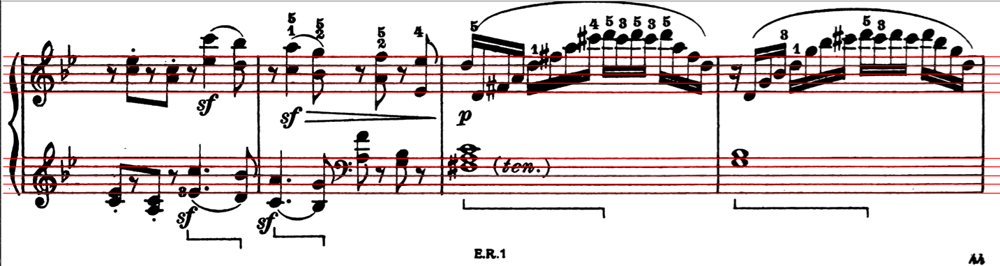
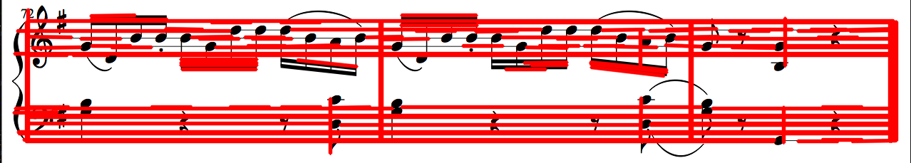
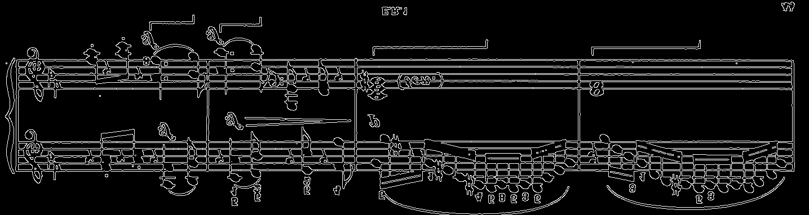

I worked on this project in my last year of college, and the goal was to implement several basic image operations such as image resampling, convolution, and edge detection to detect musical symbols in the image i.e. create an Optical Music Recognition (OMR) program. I wanted the OMR system to be capable of detecting where the note heads, quarter rests and eighth rests were in the image.
When creating the convolution kernels, I implemented two different functions. One function created a MxM mean filter, while the other created separable kernels Hx, Hy of the given size. For the convolutions themselves, I implement two different types of convolution functions. One function used a 2 dimensional convolution filter and the other function used two separable filters Hx and Hy. The convolution operations are created to handle both odd and even length kernels. The 2-d convolution function is implemented to handle kernels that may have different lengths of rows and columns i.e. they need not be MxM filters and can be MxN filters.
Now that I had the convolutions, I needed to implement a template matching and an edge detection function. The goal of the template matching was to locate various musical symbols in the image. To solve this problem, I have implement a function that accepts input image and templates as an input parameter. The function then loads the input image and templates and converts them to grayscale image. The function then goes on to convert grayscale image and templates into binary and inverse of the binary images. I then apply 2D convolution in the images using the for loops with the given template. Lastly, the images then had to be normalized after applying convolution. The distance is then calculated between the two images and if the value is above certain threshold, the musical symbol present in that specific template was found. It is possible that there might be more than one value above certain threshold and so non maximum suppression was used to keep only one value.>
Edge detection was a little simpler as I just used sobel operators to implement it. I also created a more sophisticated method for template matching, which is explained on my github page for this project
Lastly, I had to find a way for the program to detect staff lines. Initially I used a standard Hough transformation, but as seen below, this caused issues since it would find lines both vertically, and horizontally.

To fix this, I updated the method so that I could take into account the pixels in each row and give higher priority when more black pixels are located in it. Then, I made a threshold saying that chosen lines cannot be within 3 pixels of each other so that I avoid clumping. Then, I sorted the chosen lines so that I can classify them in dictionaries with the other 4 lines that they are around. The first image in this post is an example of our lines being detected using this hybrid method. This was the final step, and after all of these were put together, the OMR was compete. This was a really fun project to work on, and really had me pushing through a ton of machine learning concepts Below is an example of the OMR on sheet music.
